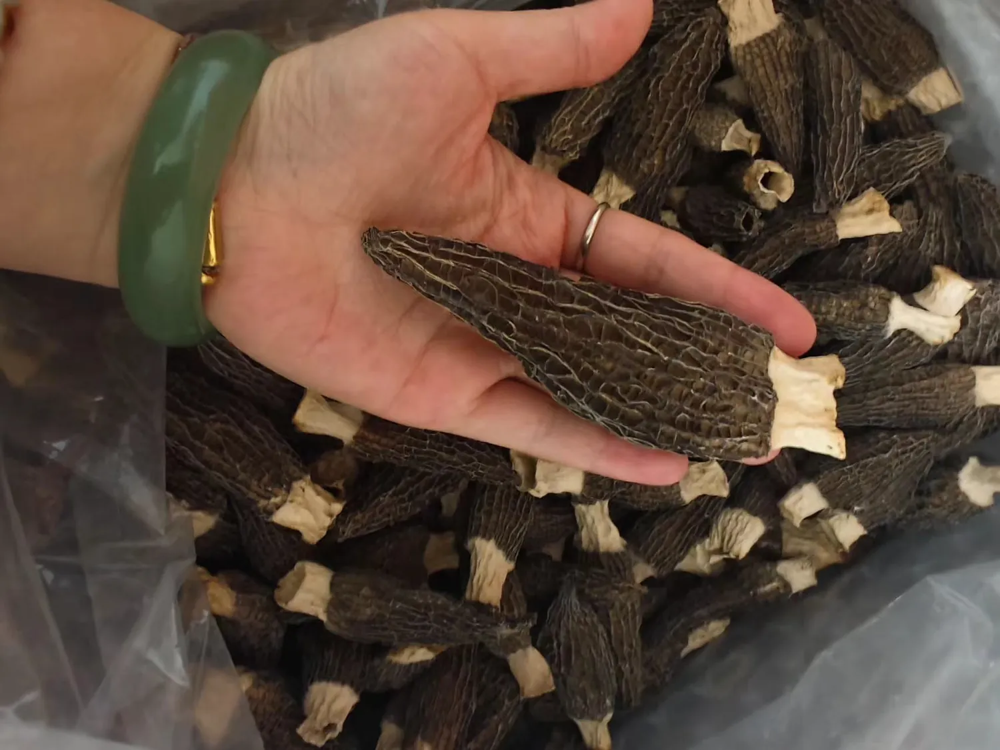
点击查看大图D152课件标注：菌胜六妹
早熟、出菇早，重在控水与避重茬
课件将D152定位为早熟型，突出出菇早、菇型好；北方棉被棚与冷棚均有应用案例。
- 管理优势：出菇进程靠前，商品菇外形较整齐。
- 重点短板：课件明确提示“不抗重茬、不耐大水”。
- 皖北要点：优先新茬或轮作地，催菇水必须看成熟度，避免一次性过量。
红线提醒不把“早熟”理解为提前大水；水量服从土质、底墒和下渗能力。
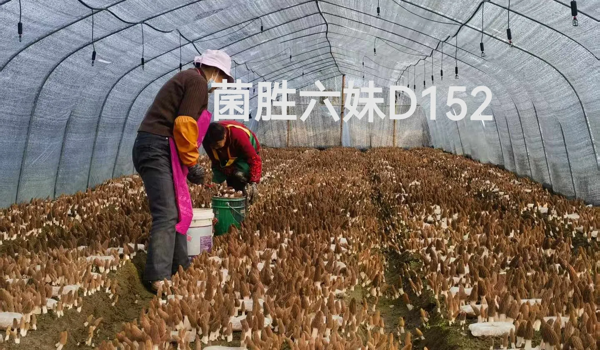
图片来自服务器培训课件：D152棚内采收现场
先看菌种适配，再看棚型能力，最后把操作落到“地温、墒情、天气预报和棚内实测”四项记录上。
以下特性按服务器课件整理。网站统一使用课件型号“D152、1201”；选种时仍需同时核对菌种批次、活力、纯度和皖北本地小区试验结果。

点击查看大图课件将D152定位为早熟型，突出出菇早、菇型好；北方棉被棚与冷棚均有应用案例。
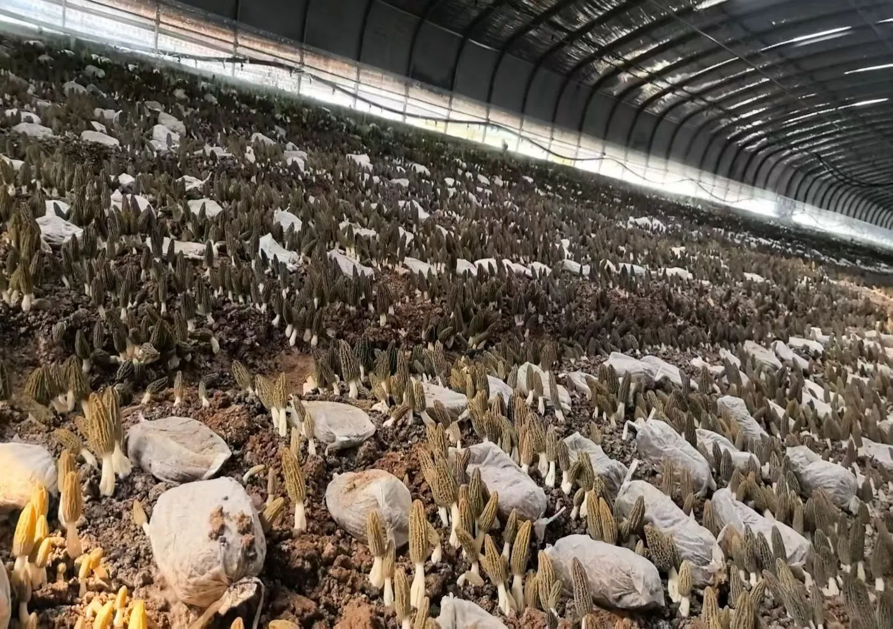
点击查看大图课件给出的生长周期参考为95—115天，鲜菇褐青色、烘干后黑色，温度抗性和重茬适应性为其重点。
新茬地、希望出菇靠前，并且能把催菇水和棚内水分管细。
棚型多样、温度波动较大，或存在重茬历史但已经完成系统性风险治理。
先做小区试验；同批菌种留样；记录播种、营养袋、催菇和首菇日期。
从菌种制作、灭菌培养到棚体通风控制，团队把实验室质量管理和生产现场需求接在一起。以下图片均来自杨俊团队的真实工作记录。
围绕D152、1201等生产用菌种，团队直接参与拌料装袋、高压灭菌、接种后培养与批次检查，尽量把污染风险拦在进棚之前。
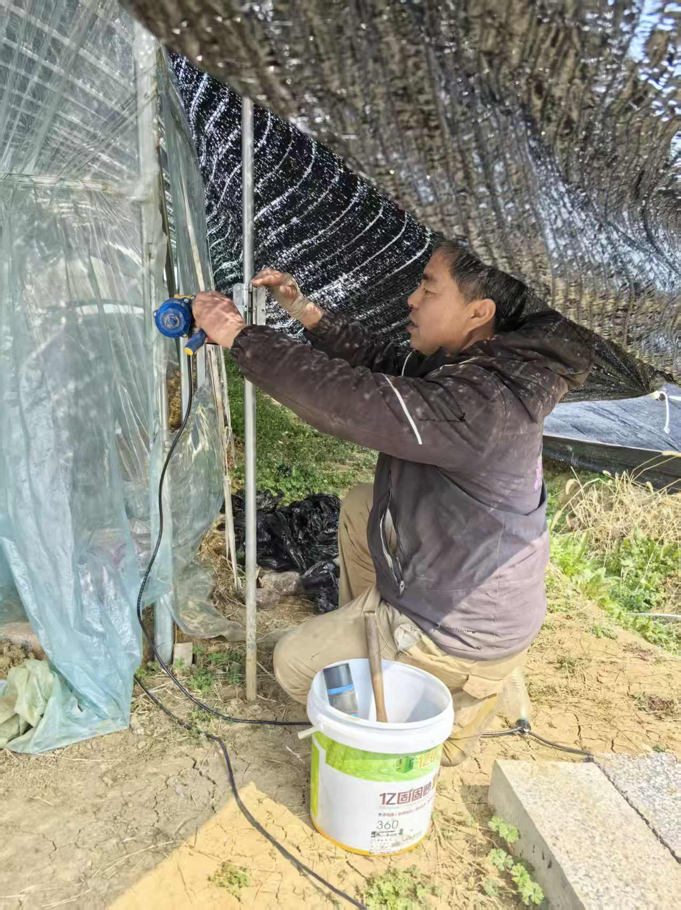
这是杨俊团队根据羊肚菌棚管理需求自主开发的自动卷膜（卷帘）系统，可在手机端对多个棚分别控制升降，阴晴变化时能更快调整棚内通风。
团队覆盖菌种研发、资源收集、育种生产、副产品开发和现场执行。
安徽农业大学博士，蚌埠学院食品与生物工程学院教师；专注以羊肚菌为代表的高值食用菌育种。
蚌埠学院食品与生物工程学院教师，十佳农业科技特派员。
安徽农业大学教师，负责食用菌资源收集，并参与菌种质量把关。
蚌埠学院食品与生物工程学院教师，负责菌种生产及育种。
菌胜生物科技有限责任公司创始人、CEO。
蚌埠学院食品科学与工程专业本科生，菌种生产员。
图片与人员信息整理自《安徽蚌埠羊肚菌汇报—报告（杨俊，2026.03.22）》；职责表述按课件内容整理。
冷棚的根本特点是没有保温被、夜间保温能力有限；棉被棚的优势是可通过保温被、光照和风口主动调节，但管理要求更细。
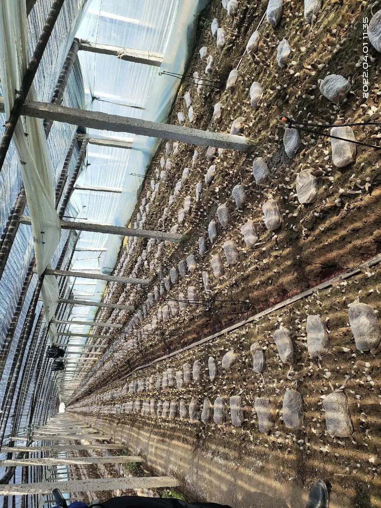
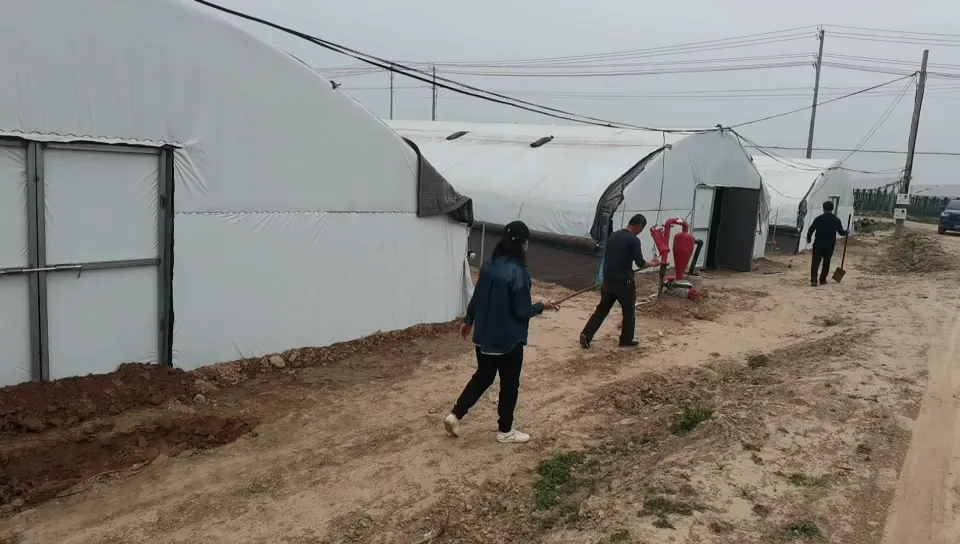
设施缓冲能力有限，必须让播种后的发菌阶段顺着降温趋势推进，并在催菇前同时核对菌丝成熟、床面原基和未来天气。
| 比较项目 | 冷棚 | 棉被棚 / 暖棚 |
|---|---|---|
| 核心逻辑 | 顺天时，提前看天气 | 主动调节，四项一起管 |
| 播种阶段 | 窗口期窄，避免过早或过晚 | 可用光照与保温帮助发菌，但仍要防高温 |
| 出菇阶段 | 逐步加大通风，防扫地风 | 见光不超温，通风不骤降湿 |
| 极端天气 | 高低温、大风、大雪承压弱 | 可缓冲，但依赖风口、棉被与安全加温预案 |
| 典型误区 | 只保湿、不通风；固定日期催菇 | 长期闷棚；把保温误解为持续升温 |
菌种是核心、营养是基础、管理是保障。任何一个数字都不能脱离土质、棚型和生育阶段单独使用。
 01
01
优先壤土或沙壤土，地势平整稍高、排水通畅；重茬地、长期撂荒地和污染水源慎用。
先排水，再谈保湿 02
02
围绕D152、1201核对企业资质、菌种活力和纯度；同批留样并记录到棚。
品种好，也要批次稳 03
03
以5厘米地温稳定降至约16℃或以下为重要判断，结合未来天气在“暖尾冷头”安排。
看地温，不只看日历 04
04
播种后1—2周放置较合适，最晚一般不超过20天；划口贴地、摆放均匀。
有效吃料才有后劲 05
05
营养袋明显变轻、菌霜褪去、原基稳定拔尖，再叠加一周以上相对稳定天气。
抓冷尾暖头，忌盲目早浇 06
06
原基期保湿，幼菇后逐步降湿、增氧；高温高湿和地面扫风都要避免。
见光不超温，通风不骤变 07
07
寒潮前保温、暖日先通风、大雪前加固；成熟及时采收，规范烘干并低温保存。
预案要做在天气到来前先清茬、排水、测pH与EC，再定处理方案。辛硫磷用于地下害虫风险治理；生石灰或草木灰用于土壤处理时必须二选一，不能三样直接混在一起撒。
服务器培训课件参考量：旋耕前均匀撒施，再混入土层；旋耕深度不少于15厘米。只在所购产品标签允许、当地植保人员确认后使用。
课件另记“辛硫磷乳油2 kg/亩随水”，但没有标明乳油浓度，故不作为通用处方。若“辛60”指60%制剂，绝不能照搬3%颗粒剂15—20 kg/亩；请按瓶身登记作物、靶标和标签用量核算。
数字引自DB33/T 1378—2024，属于外地标准参考。皖北必须结合本地土样复核，不能把两者叠加使用。
辛硫磷不得与石灰、草木灰等碱性材料自行混配；分开操作，间隔与防护按产品标签及当地农技、植保指导执行。播种后尤其是出菇期，不使用未登记或来源不明的农药。
用量依据：服务器棉被棚培训课件（土壤整治页）及浙江省地方标准DB33/T 1378—2024《羊肚菌大田设施栽培技术规程》。后者仅作皖北小区试验参考。
以下仅作制定巡棚阈值的参考，现场以棚内传感器和长势为准。
| 环节 | 课件参考 | 现场判断 | 需要避免 |
|---|---|---|---|
| 选地 | 土壤pH 5.5—8.5；EC（1:5）宜低于0.8 dS/m | 排水、土质、前茬和水源同时合格 | 烂泥田、硬底田、污染水 |
| 整地播种 | 旋耕深度15厘米以上；大土块不超过3厘米 | 覆土严密、不露菌种，播后观察萌发 | 只追求低温而过度推迟播期 |
| 营养袋发菌 | 8—16℃可发菌，12—16℃吃料较好 | 正常温度下一周仍不吃料要排查 | 放袋后再大水补墒 |
| 催菇水 | 20厘米土层湿透；黏土宜少量多次 | 木棍可轻松下插，表面无长期明水 | D152大水、低洼积水、过早操作 |
| 出菇温湿 | 低温养菇常用12—18℃；前期湿度90%—95%，3厘米后降至85%—90% | 原基、幼菇和成菇分阶段微调 | 高温高湿、忽干忽湿 |
| 通风 | 侧风口宜高于地面80厘米；幼菇后逐步加大 | 结合CO₂、菇柄长度和湿度判断 | 原基期直吹地面的“扫地风” |
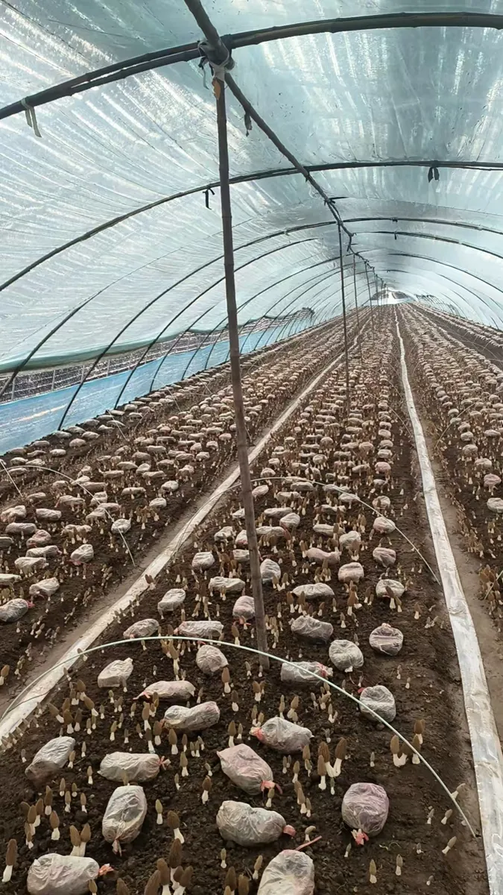
营养袋与床面摆放均匀、贴地吸收，后续管理才有基础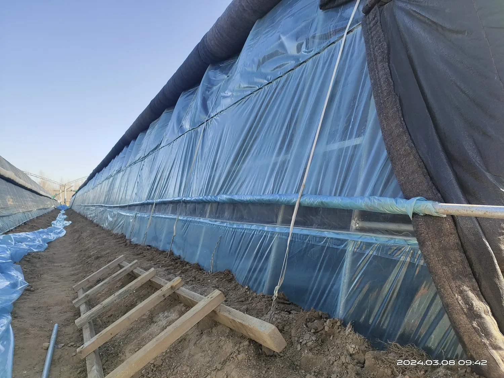
风口设计风口位置抬高，减少地面直吹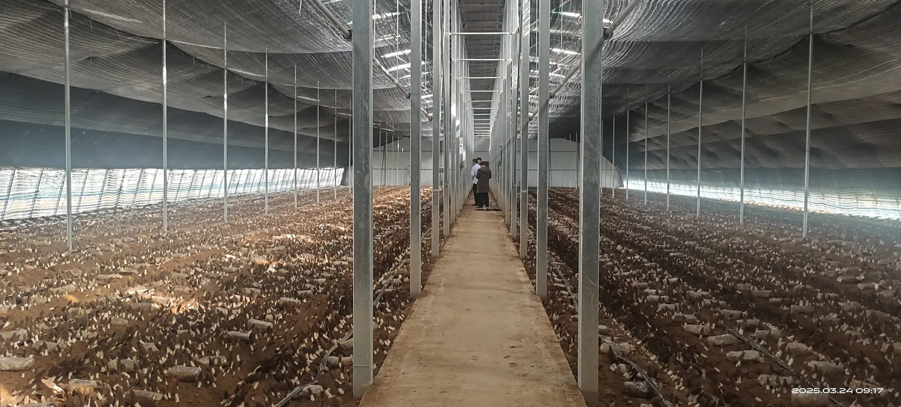
规模化巡棚通道清晰，便于分区记录与及时采收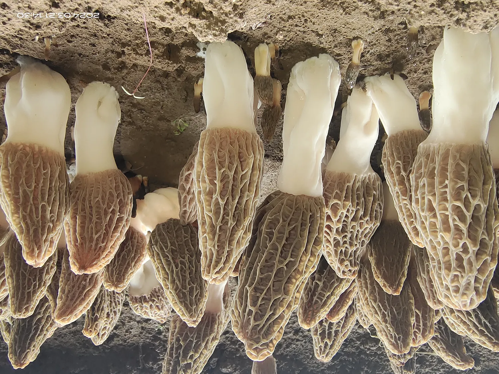
商品性观察菇型、菌柄和成熟度同时看技术文字与图片整理自服务器yangdujun文件夹中的北方高质量出菇、冷棚、棉被棚和菌种介绍培训课件；用于教学与技术示意。
根据本次上传的《菌种制作及材料采购的基本原则》整理。每一步都保留原资料中的操作照片或图解，点击图片可放大查看；生产时仍应结合本单位设备、质量标准和批次记录执行。
 01
01接种工具、容器和操作台按制度消毒；接种区与污染区分开，人员操作前后完成清洁。
 02
02核对来源、代次和品种特征，观察菌丝均匀度、色泽、长势及有无杂菌斑。
 03
03兼顾营养组成、含水量、通气性和pH，使菌丝能够均匀、快速并稳定生长。
 04
04按装量和设备设定温度、时间与排气程序，并核验灭菌效果，避免出现冷点。
 05
05温度、湿度、避光与通风协同控制，发现升温、积水或异常气味及时分区排查。
 06
06检查外观、菌丝完整性与杂菌污染，必要时结合培养测试，合格批次方可使用。
 07
07把母种、配方、灭菌、接种、培养、检测和去向串成批次记录，异常时能够回查。
 08
08从安全性、适配性、稳定供应和成本综合判断；到货后做感官、理化和批次验收。
两份“大田栽培”扫描件经校验内容完全相同，网站仍按您的要求保留两份文件，其中一份标注为备份。


图解均裁切自本次上传的原始扫描资料，仅用于帮助理解关键环节；点击卡片图片可查看清晰大图。
图片取自服务器北方羊肚菌培训课件，用于田间初筛，不代替实验室鉴定。发现异常先标记病健交界、停止带土走动，并同步记录温湿度、地温和最近三天操作。
高温、高湿、积水和通风死角往往会放大风险
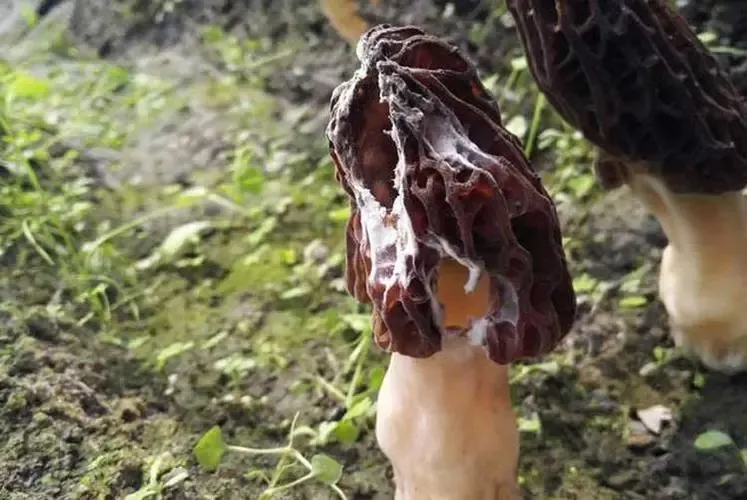
病害 01床面或菇体出现白色霉层并扩展。先查高温高湿、积水和通风死角，立即分区标记。
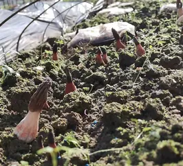
病害 02菌柄基部出现红褐色异常、长势转弱。记录水分和温度变化，沿病健交界隔离观察。
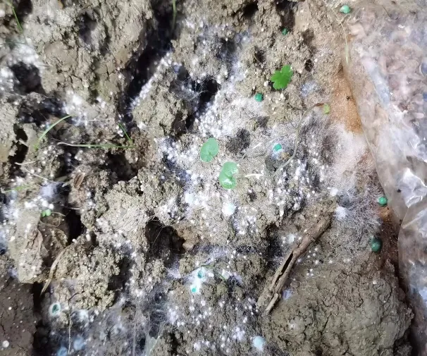
病害 03蛛网状菌丝在床面或菇体间蔓延。减少人员与工具跨区，避免带病残体和土粒扩散。
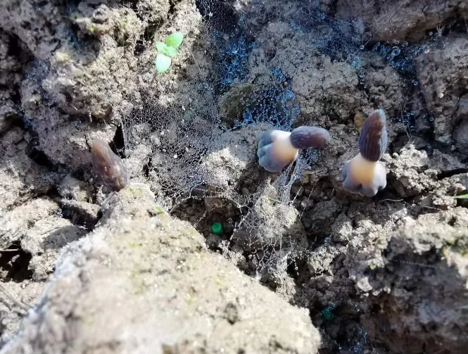
病害 04菌柄基部变黑、萎缩或软弱。重点排查低洼积水、长时间高湿以及换气不足。
清洁田园、物理监测和播前治理优先
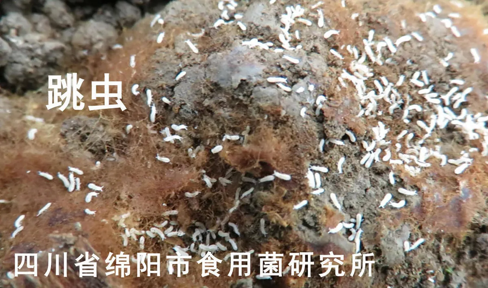
虫害 01床面可见细小虫体，受惊会跳动，常聚集在潮湿区域。先做粘捕和局部数量记录。
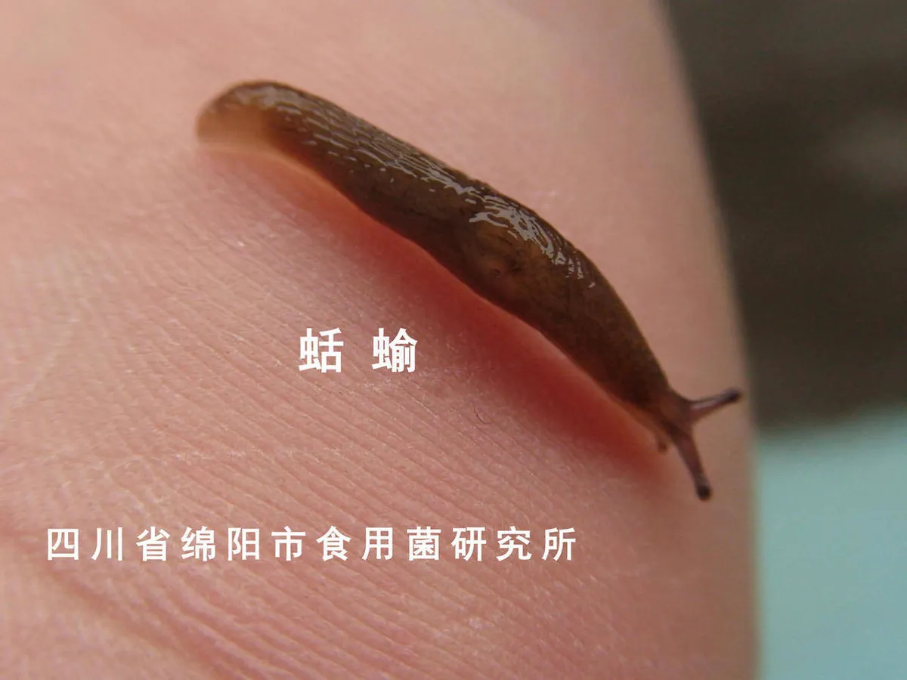
虫害 02菇体有啃食缺口，床面或通道留有黏液痕。夜间巡查低洼潮湿处，并清理藏匿物。
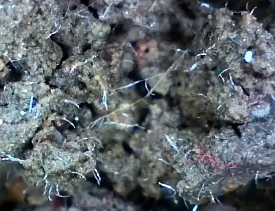
虫害 03肉眼不能仅凭一张床面照片确诊；出现成片衰弱、腐烂时，应取病健交界样品送检。
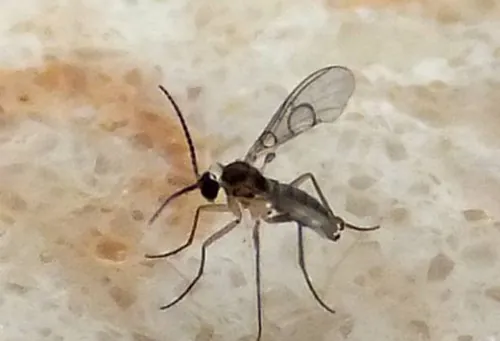
虫害 04潮湿有机物附近可见小型成虫或幼虫。用粘虫板监测趋势，同时清理残菇和污染物。
优先轮作、高温闷棚、清洁田园和经确认的土壤处理。
温、光、气、湿协同，避免高温高湿和床面长时间明水。
拍全棚、病健交界和近景；工具分区，不把病土带向健康区。
食用菌出菇期尤其谨慎，只按登记标签和当地植保指导处理。
图片来源：服务器yangdujun文件夹《北方羊肚菌高质量出菇技术体系》课件病虫害页；点击图片可查看大图。
以蚌埠气象站（WMO 58221）日值为基础，汇总2020/21—2024/25五个完整种植季。站外气温用于判断大趋势，棚内仍需独立布设温湿度记录。
出现在2020/21季1月，寒潮前需提前检查保温、棚膜与加固。
两个月是越冬养菌、防冻与水分稳定的核心阶段。
历史日最高达到32.0°C，晴天棚内升温通常更快。
单位：°C；点击图例可显示或隐藏某一季
10—11月重点看播种窗口；12月—次年1月防寒并保持发菌环境稳定；2月评估催菇条件；3月重点防棚内骤热。
| 月份 | 月均温 | 平均低温 | 极端低温 | 低于0°C天数 |
|---|
“低于0°C天数”按当日日最低气温统计；站外气温不等于棚内温度。
| 月份 | 五季月均温 | 平均最低温 | 平均最高温 | 五季极端最低 | 管理关键词 |
|---|---|---|---|---|---|
| 10月 | 17.2°C | 12.0°C | 23.5°C | 2.8°C | 选地 · 整棚 |
| 11月 | 11.6°C | 6.5°C | 17.8°C | −3.6°C | 播种 · 看地温 |
| 12月 | 3.6°C | −2.3°C | 9.8°C | −11.2°C | 发菌 · 防寒潮 |
| 1月 | 3.4°C | −2.1°C | 9.5°C | −11.5°C | 成熟度观察 |
| 2月 | 5.5°C | 0.5°C | 10.8°C | −9.0°C | 催菇前评估 |
| 3月 | 11.9°C | 6.2°C | 17.8°C | −1.5°C | 通风 · 采收 |
采用Meteostat蚌埠站58221逐日数据（2020-10-01至2025-03-31），由本站按月和越冬季汇总。仅用于历史趋势示例；当季操作必须结合短期预报、棚内温湿度、地温与作物状态。
这是蚌埠及皖北常见越冬节奏示例，不是固定播期表。冷棚尤其要服从当年温度趋势，棉被棚也不能脱离地温和菌丝成熟度。
出现问题不要立即“大水、大药、大通风”。先拍全棚、床面和近景，记录温湿度、地温、用水和最近三天操作。
先查：菌种活力、土壤含水量、地温、覆土是否过厚或露种。
处理：先分区标记并找原因；放营养袋前补足必要水分，避免盲目全棚操作。
先查：温度是否处于8—16℃、划口是否贴土、菌丝是否有污染。
处理：核对袋温和床面状态；温度偏低可适度见光提温，超过18℃则加强上部通风。
先查：浇水是否过早、营养袋是否充分吸收、菌霜是否褪去、未来天气是否稳定。
处理：保持环境稳定并分区观察，不连续追加大水；D152尤其警惕水分过量。
先查：CO₂积累、顶风口是否有效、棚内光照是否长期不足。
处理：从高位小幅增加换气，随菇体长大逐步加大；原基期避免扫地风。
先查：高温高湿、床面积水、通风死角和病健交界。
处理：先隔离病区、降低环境波动，按现场情况开展专业病虫处置。
可围绕D152、1201的菌种适配，冷棚与棉被棚方案、播种窗口、催菇判断和异常诊断开展交流。联系时请尽量携带完整生产记录。